Map Author: Cake
Origin: Map Link
Presentation
Lost Embers is a full length CTM map. It is open world with custom items and textures.
It was advertised as very hard. That point will be relevant later.
Overview
The Wires
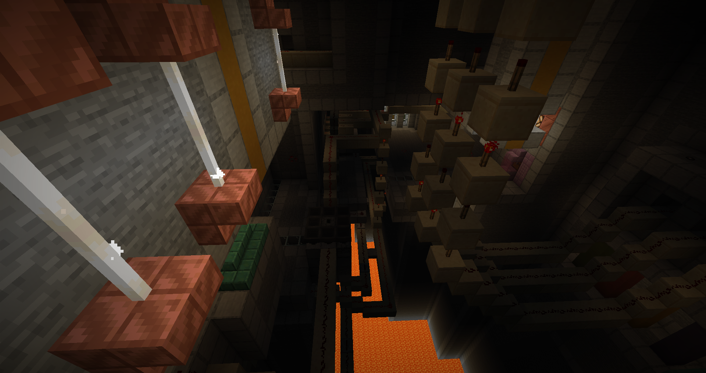
This is a really unusual and fun way to start a map, made me feel like I was breaking into a forbidden place as I thought I skipped the “start map” button. The area does something I haven’t seen a lot of, and that’s having gameplay without gear. You’re not intended to beat it using a pickaxe or weapons really, instead you have to navigate the wire maze and make use of the few bits you can break off of the circuits.
The Cliffs
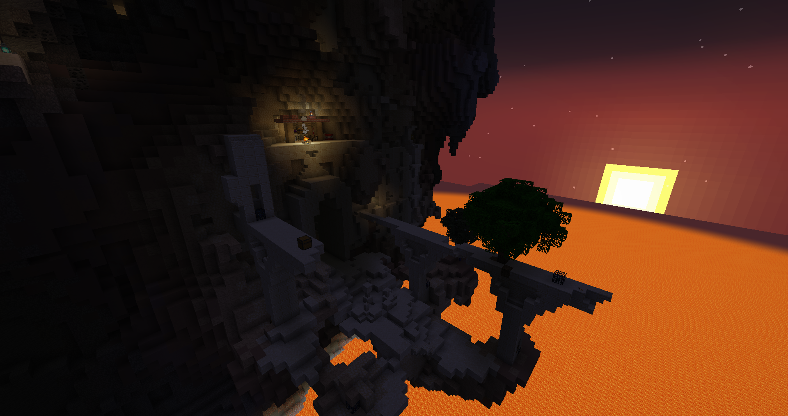
The challenge in this shredded area is to settle a small base and get materials to make your gear. It’s a somewhat hostile place but with more than enough rewards to thrive. There are so many hidden rooms and corners, it’s very easy to miss parts even after clearing it. The objective room build up mobs very easily, which is a good introduction to the global style of the map. Also introduces you to the most important tool, exploding arrows.
The Monument
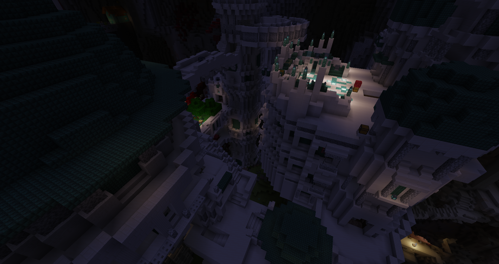
The monument being a full-on area was great. Usually it’s just a side place, but here it didn’t make me feel like I was robbed of an objective or area slot. Due to being a dungeon too, it’s very convoluted and not that convenient to use as a base aside the open rooms next to the monument itself. It’s after settling in that things really open, with now 4 different potential areas directly connected to go to. The giant door promising to open after getting the other 15 wools.
The Nest
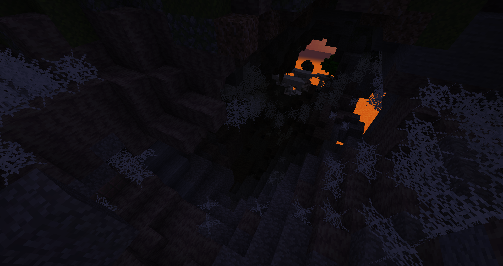
This is a textbook spider spam area, on paper it would be big nope, but it’s pretty fun due to the segmented cheese layout. The final chamber made me use the absorption potions and I like that it pushed me to be more resourceful. The design itself is very standard and can be boiled down to “caves with cobwebs”.
The Bridge
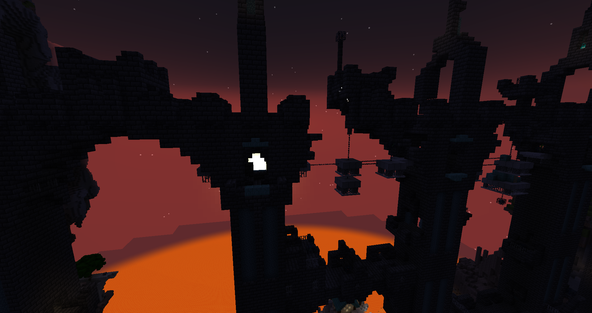
Good area that keeps you on the edge, with intentional buildup choke points that push you to expend your explosive arrows. It makes good use of the verticality to allow diverse approaches and threats.
The Pit
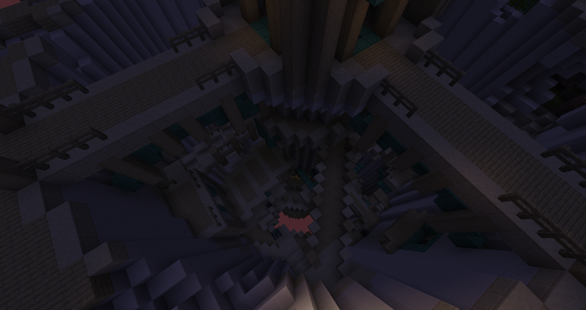
Deadlier and meaner, the pure verticality means the mob buildup is almost permanent, making you really try different approaches as too slow or too fast can lead to problematic dead ends. The map is still very generous and hands out lots of goodies in case you fall a bit too deep. This is also where you learn that fire does indeed spread.
The Temple
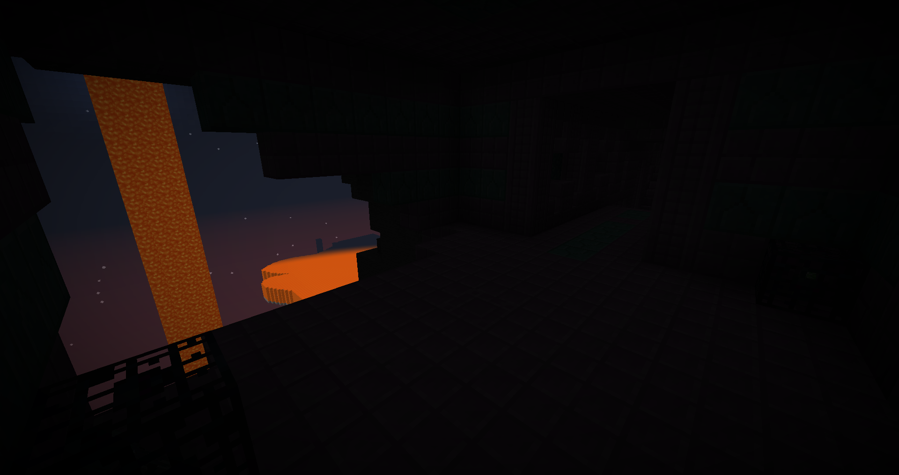
A more standard dungeon, but still exploiting verticality with many openings so you’re rarely safe as you go down. The rifle crossbow was amazing to clear out the mob swarms!
The Mines
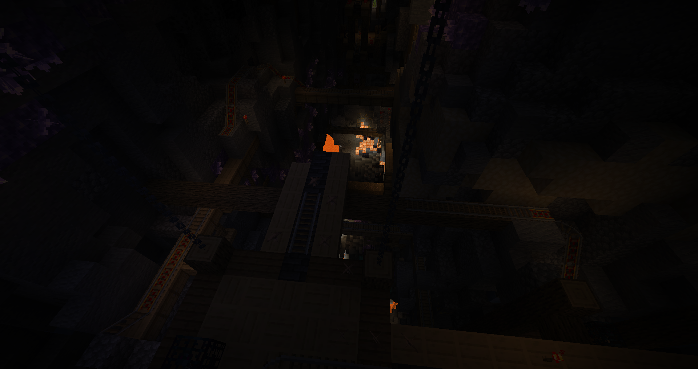
Very unconventional with the objective hanging almost at the start, it’s a lot of winding paths with plenty of resources. The hazard danger is quite high while the mobs are fairly low in numbers for once. It was a nice breather area after the more intense ones, the shortcut was appreciated too. I fell for the snow trap like a dummy despite knowing it was there and not using leather boots for it…
The Fortress
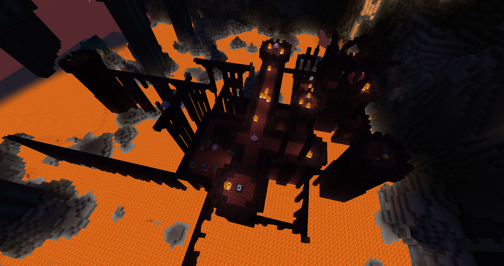
I don’t know if it’s because I adapted, or that the area is easier than expected, but it was a pleasant dungeon to beat. The crystals help clearing out some danger in advance, and your explosive arrows will be valuable for the many free targets. The wool chamber is basically free real estate. Exploring the outskirts also lead to really nice things, like a full mending gold armor set, or a whole new bonus objective goal, and even a hint house.
The Cavern
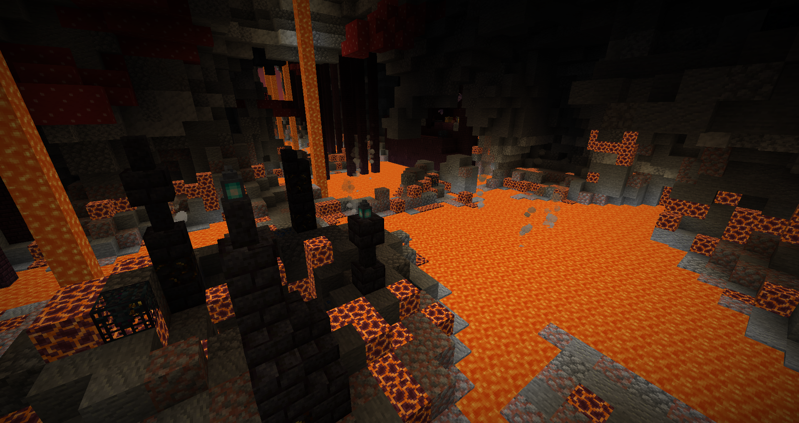
Quite short, the fire hazard is magnified with the spawners in hard to reach places. Hot action guaranteed! It was very chaotic at times, but that’s where explosive arrows shine the most. The hidden sewer section giving away the recipe for flameblood needles is an amazing reward.
The Sewer
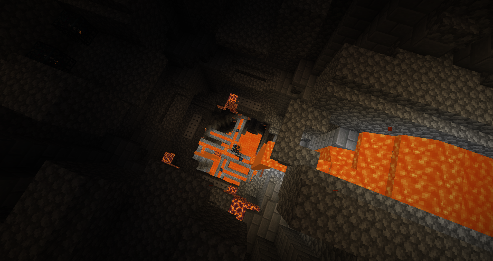
I went into it from behind and it was quite hard. Very little safe footing and many ranged threats, going up from under had some benefits but I quickly backed down after the midway point when witches started to rain down. Shoot your arrows everywhere.
The Oven
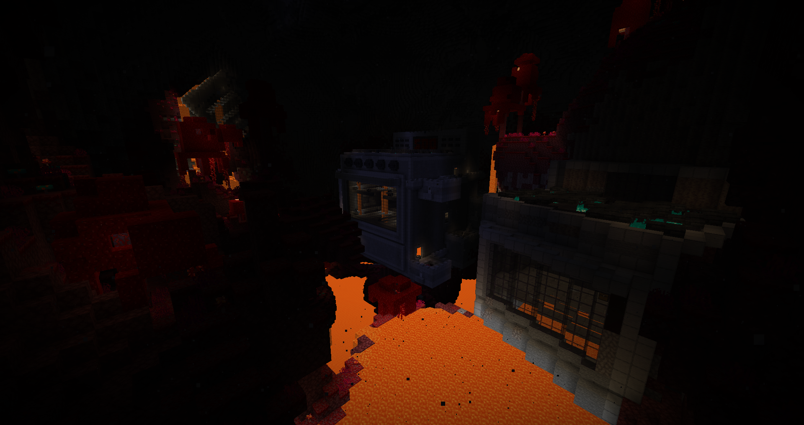
This area is what I wish vanilla nether would be; very hostile and requiring extreme care. With the looming threat of complete wipe into lava as well as high concentrations of deadly mobs, I chose to tackle the area in a very systematic manner, spending a high amount of my valuable resources to make it a sure victory. Being the penultimate challenge and highest difficulty, it only made sense to expend my stocked supplies, and the incredible rewards made it all the more worth it. The lava waders are something that make so much sense I’m surprised it never really got done before, feels incredible to use.
The Wall
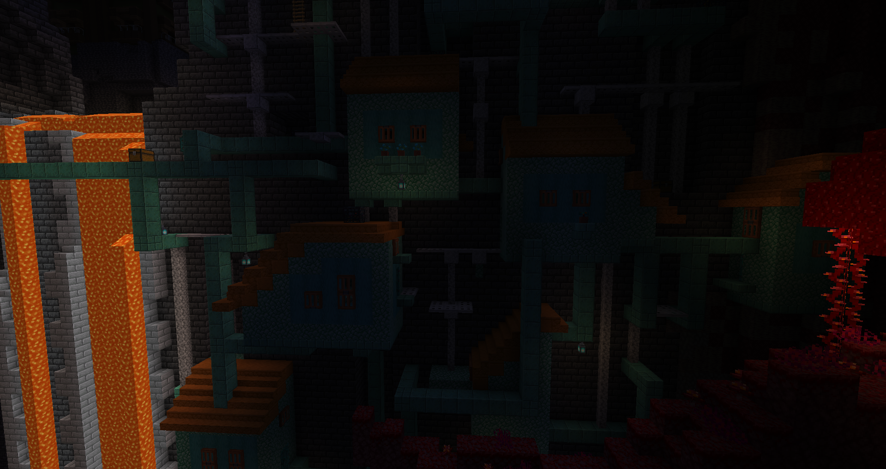
Quite out of order, the area still proved challenging with the extreme catwalk layout. It was a bit confusing to navigate, but the area is so small and open it wasn’t a real issue.
The City
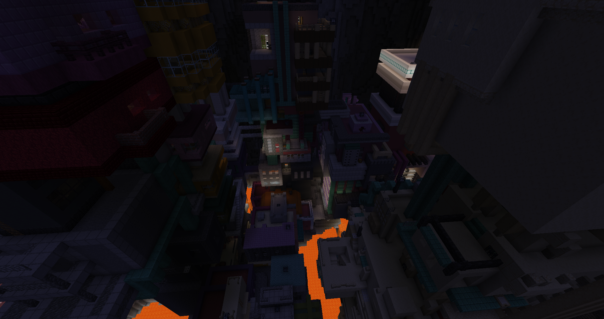
Last time this area layout made me quit a map, this time I crushed it since I had all the tools. A very chaotic area where you need to move fast and act decisively or you die. Definitely unfair if you try to do it early, but the point is to beat it smart. This is also an extremely rewarding loot place(arguably even too much), combined with 2 objectives. Fire tick being on made a really epic moment where I had to conquer an apartment on fire with creepers raining down on me. Managed to waste the netherite ingot on the wrong chestplate, leading me to display it on the wall of shame…
The Finale
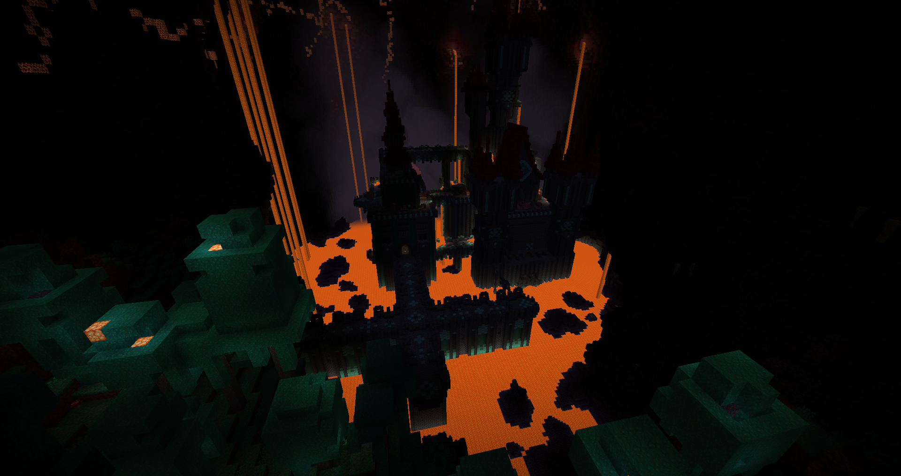
Combine all the previous chaos and amp it up with many tnt stashes around creeper and blaze spawners. Don’t expect to beat the area without at least one or two mass explosion, it’s the hardest the map went, yet it’s also quite easy because you have the strongest gear and have no more future challenges to save up resources on. It’s also a very joke area at times, where it feels like Cake stopped holding back for the finale. It was a lot of fun but damn was I broken, near immortal. Somehow ended up creating an even more comical situation when I dug the center of the boss arena and the boss fell into the void as it spawned.
Conclusion
The map was lots of fun, exploration is rewarded handsomely with many many secrets, along with shattered levels that force you to use blocks to travel safely. Even with standard or almost vanilla terrain at times, the amount of secrets and tricky spawner placements make it exciting to explore, and each area is fairly short so problems don’t have time to become annoying. There were tons of loot and lots of mob spam, the design clearly prioritized chaotic fun over tight balance, and I feel like it’s showing as Cake’s style at this point.
In another map, I’d have complained about the low spawn delays, the spawner spam and abuse of blazes almost everywhere… but not here, because of the overabundant loot and amazing explosive arrows. It’s a hard, unrelenting map, but it provides everything for the player to break the dam; it’s up to you to win with the tools given. It introduces some unique ideas and tools that help diversifying approaches. On the other hand, I’m quite disappointed by the persistent mobs which barely were relevant despite the huge potential. Also wished a bit more recipes to find maybe?
If I was told previously that this year there would be an insanely fun and hard full-length map that would have enough innovative designs to give me a ton of inspiration, I would have answered: Oh, Untold Stories 9 releases this year? And yet, it is about this map, whose expectations on were that it would be a very unfun hardcore map. This shows that expectations aren’t useful, as things likely will never be as you expect, and it puts a burden on what’s to come to be conformed to those expectations.
So yes, don’t trust the very hard rating, it’s a very good map. But also don’t trust me, and see for yourself by playing it.
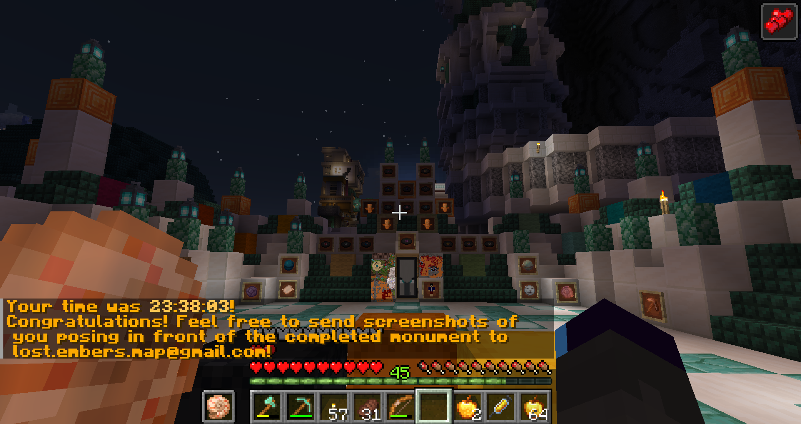